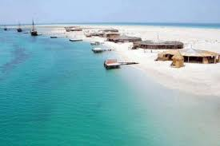
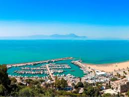
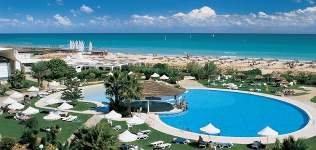
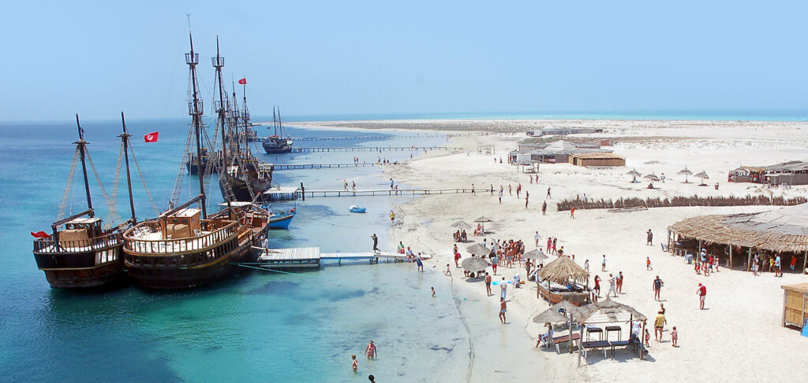
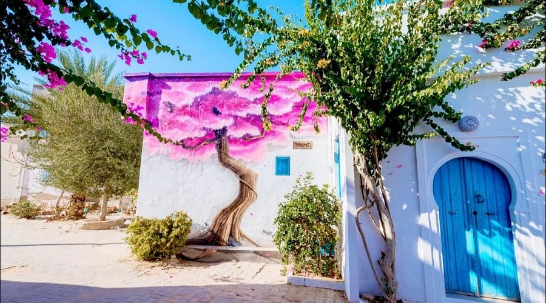
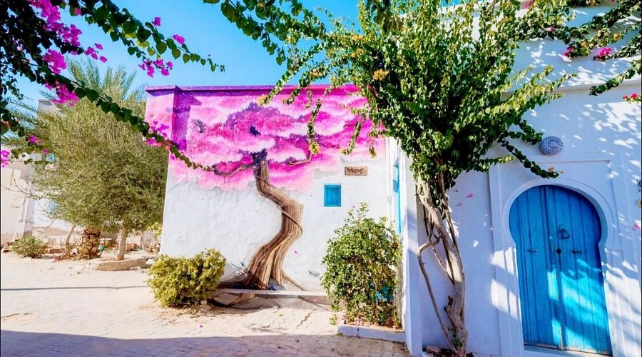
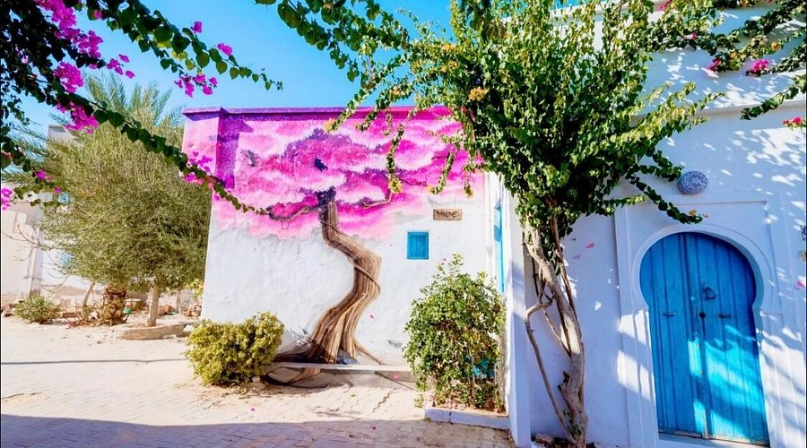
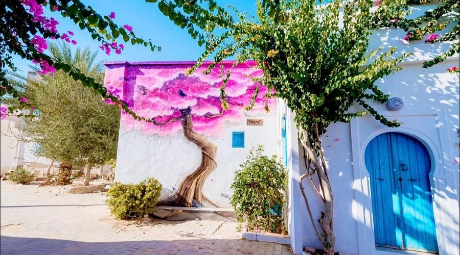

معرض الصور




 


جربة هي أكبر جزيرة في شمال أفريقيا تقع في الجنوب الشرقي لتونس وتتميز بطابعها الأندلسي وجمال طبيعتها الخلابة. تعرف بشواطئها الرملية الهادئة ومناخها المعتدل طوال السنة، مما يجعلها وجهة مفضلة للسياح من جميع أنحاء العالم.
تشتهر جربة بتعايش الثقافات والأديان، حيث يعيش المسلمون واليهود والمسيحيون في انسجام منذ قرون. وهي معروفة أيضاً بمنتجاتها اليدوية التقليدية مثل الفخار والنسيج والصناعات الجلدية. كما تتميز بأطباقها التقليدية الشهية مثل الكسكس و"الملثوث".
تاريخ جربة يمتد إلى العصور القديمة، حيث كانت مركزاً مهماً للفينيقيين ثم الرومان. وقد ذكرها المؤرخون اليونانيون بأنها "جزيرة اللوتس"، والتي ذُكرت أيضاً في ملحمة الأوديسة لهوميروس.
خلال العصور الإسلامية، أصبحت جربة مركزاً تجارياً وثقافياً هاماً بفضل موقعها الاستراتيجي. شُيّدت فيها القلاع والمساجد والمدارس، وما تزال آثارها قائمة حتى اليوم شاهدة على عمق تاريخها وتنوع حضاراتها. كما خضعت في بعض الفترات للحكم العثماني والإسباني، وهو ما أضفى على معمارها طابعاً فريداً.
حصن قديم يطل على البحر ويعكس التراث المعماري الفريد للجزيرة.
أحد أقدم الكنس في العالم، ويزوره اليهود من كل أنحاء العالم.
تجربة فريدة للتسوق بين الحرفيين ومنتجات الزيتون والعطور.

للمزيد من المعلومات، يرجى التواصل عبر البريد: ameramergzam@gmail.com